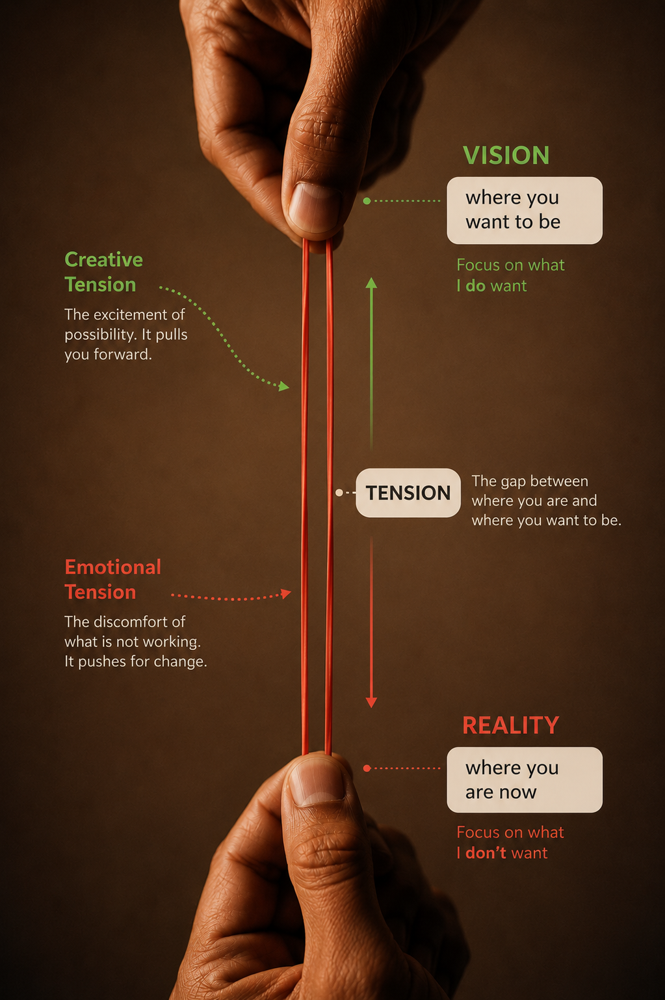

About thirty minutes
A short look at systems thinking.
Six practical tools to preview before your upcoming class. Each one has a short clip, a plain-language summary, and one question to hold onto.
On the day, we will use these ideas on a live case and on your own work. No revision needed; just move through it once.
Before the tools
Frame: Systems Thinking
Why systems thinking?
Because many work problems are not isolated events. They are produced by patterns, relationships, structures, and assumptions that keep interacting.
A short orientation.
In everyday work, it is natural to respond to what is most visible: a late submission, a missed target, a tense meeting, a quiet stakeholder, or a decision that did not land well.
Systems thinking helps us slow down and look at what keeps producing the visible event. It asks how people, incentives, routines, information flows, relationships, and beliefs are connected.
This matters because effort alone can sometimes leave the pattern unchanged. A team can work harder, communicate more, or add more checks, but still get the same result if the underlying system keeps pulling people back into the same behaviour.
The goal of this preview is not to turn you into a systems expert before class. It is to give you shared language for noticing patterns, asking better questions, and examining your own thinking before acting.
Source note. This framing draws on learning-organisation and systems-thinking work associated with Peter Senge and Donella Meadows: look beyond events to the structures, feedback, and mental models that shape recurring outcomes.
Read Donella Meadows ↗Hold this question
As you move through the tools, notice one work issue where the visible problem may be only the surface.
One of six
Tool: Levels Perspective
Levels Perspective
Look at the same situation from different depths: events, patterns, structures, and mental models.
I Love Lucy — chocolate factory. Two workers cannot keep up with a belt going too fast. They try harder. The belt wins.
Open on YouTube ↗The systems iceberg. The same idea, drawn out simply: what you see is only the top.
Open on YouTube ↗So here is the idea.
The clip is funny because effort is not the missing ingredient. The belt speed, the work design, and the expectations around the work are shaping the outcome.
Levels Perspective helps you avoid staying only at the event level. A late report, a tired team, or a low score may sit on top of repeated patterns, work structures, incentives, and beliefs about what is normal or possible.
The move is to ask a calmer question: not "who is the problem?", but "which level is producing this pattern?"
Source note. This uses the systems-thinking "iceberg" view: events sit above patterns, structures, and mental models. It is closely related to Peter Senge's learning-organization work and Donella Meadows' writing on leverage points in systems.
Read Donella Meadows ↗Before you move on
Think of a problem at work that keeps coming back. Which level have you mostly been working at?
Two of six
Tool: Creative Tension
Creative Tension
Hold the gap between current reality and the result you care about, long enough for the gap to guide action.

Creative tension holds vision and reality together. Emotional tension is the discomfort we feel inside that gap.
Peter Senge on the gap. The man who wrote the book explains it in three minutes, in his own voice.
Open on YouTube ↗So here is the idea.
Creative tension is the pull between two honest statements: what is true now, and what you want to create.
The same gap can also create emotional tension: frustration, anxiety, defensiveness, or impatience because current reality is not yet where you want it to be.
There are two common ways to resolve the tension. One is creative: keep the vision steady, face current reality clearly, and learn or act so reality moves closer to the vision. The other is relief-seeking: lower the vision, soften the facts, distract yourself, or explain the gap away so the discomfort fades.
The practice is to notice the emotional pull without letting it quietly shrink the goal. Hold both sides clearly: current reality and desired future.
Source note. Creative tension is associated with Peter Senge's work on personal mastery in The Fifth Discipline: the useful stretch between vision and current reality.
Hear Peter Senge explain it ↗Before you move on
Where have you, or your team, quietly lowered a goal to make the discomfort go away?
Three of six
Tool: Core Theory of Success
Core Theory of Success
Results improve through a loop: relationships shape thinking, thinking shapes action, action shapes results, and results shape relationships.
A team improves or declines through the loop it keeps repeating.
So here is the idea.
Core Theory of Success is used here as a practical loop for team learning. It brings together a systems view of performance with research on teams: results are not produced by action alone. The quality of relationships affects the quality of thinking; the quality of thinking affects the quality of action; action affects results; and results feed back into relationships.
The first link matters because relationships shape what information enters the room. Amy Edmondson's research on psychological safety, and Google's study of more than 180 teams, both point to the same practical idea: when people feel safe to speak up, admit mistakes, and ask questions, the team gets better information to think with.
The loop can also run downwards. If people learn that speaking up is risky, they hold back. Thinking narrows, action weakens, results suffer, and trust drops further.
Amy Edmondson — psychological safety. A useful companion idea: people contribute more of what they notice when the environment makes speaking up possible.
Open on YouTube ↗Key points from Google re:Work:
- Google's team-effectiveness work found that team norms mattered more than simply assembling high performers.
- Psychological safety was highlighted as the strongest factor: people need to feel able to ask, disagree, and admit uncertainty.
- For Core Theory of Success, this anchors the first link: relationships create the conditions for better shared thinking.
Source note. This loop is a learning synthesis, not a claim of original ownership. It is anchored in systems leadership and team learning practice, and strengthened here with Amy Edmondson's psychological-safety research and Google's Project Aristotle findings.
See Google's team-effectiveness guide ↗Before you move on
Which part of the loop is weakest in your team right now?
Four of six
Tool: Advocacy and Inquiry
Advocacy and Inquiry
Make your own thinking visible, and invite others to make theirs visible too.
Margaret Heffernan — dare to disagree. The useful version of disagreement is not argument for its own sake. It is a way to test what one person cannot see alone.
Open on TED ↗Advocacy
State your view and show how you got there.
"Here is what I am seeing, and here is the assumption I am making."Inquiry
Ask a real question to understand or test thinking.
"What led you to read it that way?"1
Here is what I am seeing, and here is how I am interpreting it. What might I be missing?
2
What are you seeing that leads you to a different view?
So here is the idea.
Advocacy is not just pushing a position. Done well, it means sharing your view, the data you are using, and the assumptions behind it. You let others see your ladder, not just your conclusion.
Inquiry is not a question with an answer already hidden inside it. Done well, it draws out the other person's data, meanings, and assumptions. It helps you understand their ladder and check your own.
The balance matters. Too much advocacy can become persuasion. Too much inquiry can become vague or passive. Together, they make disagreement useful.
Source note. Advocacy and inquiry are common in organisational learning and action-science practice, especially the work of Chris Argyris and Donald Schön on making reasoning visible and testable.
Read Chris Argyris in HBR ↗Key points from the listening article:
- Listening is active work: pay attention to the speaker's meaning, not only to your reply.
- Good inquiry slows the conversation down and reduces the chance that you only hear what confirms your view.
- The practical move is simple: ask, pause, reflect back what you heard, then decide.
Before you move on
In your last disagreement, were you mostly advocating, mostly inquiring, or balancing both?
Five of six
Tool: Mental Model
Mental Model
Every person makes sense of the system through prior experience, habits, and beliefs.
Veritasium — the most common mistake your mind makes. A simple guessing game shows how people search for evidence that fits the answer already in mind.
Open on YouTube ↗So here is the idea.
A mental model is the picture in your head of how something works. You may not have chosen it deliberately, but it still shapes what you notice, what you ignore, and what you do next.
In work settings, a mental model might sound like: "this unit prefers detail", "that stakeholder moves carefully", or "this issue is mainly a resourcing problem". Any of these may be partly true. The question is whether they have been checked recently.
They are also one of the deepest levels in Levels Perspective. If a belief keeps shaping the same pattern, changing the surface action may not be enough.
Source note. Mental models are one of Peter Senge's five learning disciplines in The Fifth Discipline, and are also central to systems thinking because assumptions often sit beneath recurring patterns.
Read a plain-language overview ↗Before you move on
Name one work belief that may be useful, but should be checked again.
Six of six
Tool: Ladder of Inference
Ladder of Inference
Use this final tool to slow down the jump from what happened to what you decide to do.
TED-Ed — Rethinking Thinking. The lesson introduces the Ladder of Inference as a process for rethinking how we interpret interactions.
Open the TED-Ed lesson ↗7Actions. We act based on the beliefs we have adjusted.
6Beliefs. We adjust what we believe about the world or the people involved.
5Conclusions. We reach a judgement, and emotion often follows.
4Assumptions. We fill in a story and fact starts to blur with interpretation.
3Assigned meaning. We interpret what the filtered information means.
2Filtered information. We notice some details and leave others out.
1Raw data and observations. What a video recording would show.
So here is the idea.
The transcript describes a ladder that operates quickly and mostly outside our awareness. An experience enters at the bottom as raw data and observations. In a blink, we filter details, assign meaning, make assumptions, draw conclusions, adjust beliefs, and act.
The key risk is not that we interpret. We have to interpret. The risk is that we forget which parts were observed and which parts were added by our own ladder.
The practice is to pause when your reaction feels strong and walk back down: what did I actually observe, what did I filter in, what meaning did I add, and what else could be true?
Source note. The Ladder of Inference was first proposed by Chris Argyris and later popularised in organisational learning work, including The Fifth Discipline Fieldbook. This page uses the labels from the TED-Ed lesson transcript.
Review the TED-Ed lesson ↗Video example
The parking lot ladder
- 1Raw data and observationsA driver moves into the parking spot you were heading toward.
- 2Filtered informationYou notice your grip, the brakes, the other driver's face, and the feeling of being cut off.
- 3Assigned meaningThe moment becomes a violation of taking turns.
- 4AssumptionsYou infer that the driver saw you, ignored your signal, and put their own urgency first.
- 5ConclusionsYou conclude the behaviour was inconsiderate and feel justified in reacting.
- 6BeliefsYou update a broader belief about needing to protect your place next time.
- 7ActionsYou move behind the car and prepare to speak to the driver.
Then new data arrives: the driver's wife is in labor. The facts did not change, but the meaning, assumptions, conclusions, and action all change.
Review the TED-Ed page ↗Before you move on
Think of one work moment where you may have moved up the ladder quickly. What was rung 1?
That is the six tools.
You have the preview for the upcoming class.
- 1Levels Perspective
- 2Creative Tension
- 3Core Theory of Success
- 4Advocacy and Inquiry
- 5Mental Model
- 6Ladder of Inference
To improve a system, we often need to look at process, structure, incentives, and relationships. We also need to examine the thinking we bring into the system. That is why the final tool turns back to your own ladder.
Your task
Walk one real work moment down the ladder.
Take one real moment from your own work where your interpretation mattered. Walk down the Ladder of Inference, one rung at a time, using the same labels from the video. You will use it in the upcoming class.
Two short rules
- Use one real moment. It can be small: a message, a meeting comment, a score, a decision, or a silence.
- At rung 1, write only raw data and observations. Just the words, the email, the score, or the action. No interpretation yet.
That is the whole preview. See you in class.